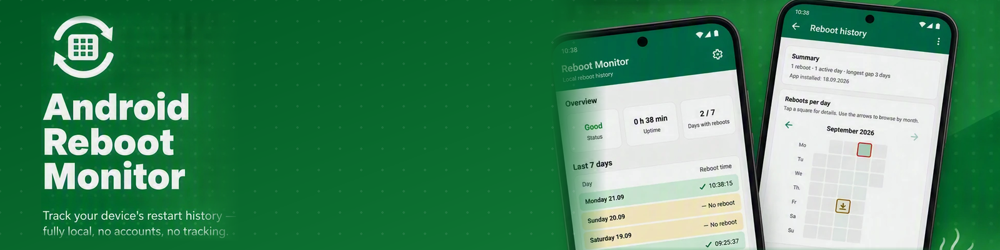
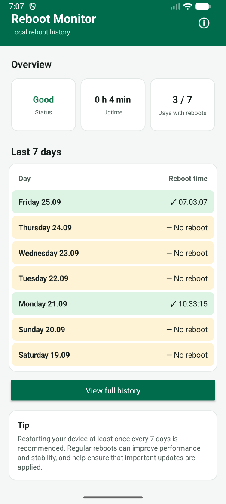
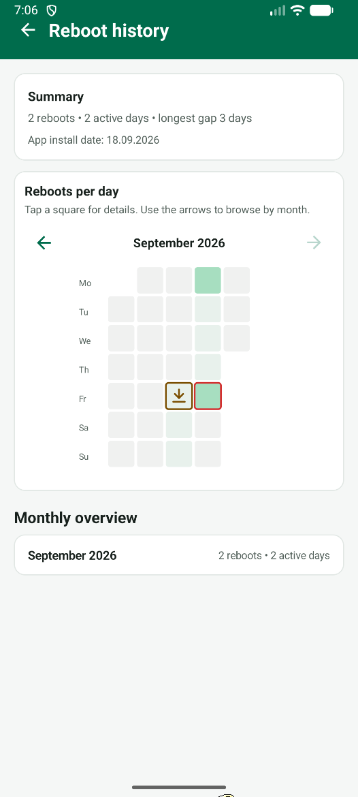

RebootMonitor automatically tracks when your Android device restarts. All data remains stored locally on the device. No reboot information, usage data or personal information is transmitted to external servers.
Automatically detects device reboots and validates uptime.
Current uptime, latest reboot and reboot statistics.
Explore reboot activity through an interactive heatmap and detailed historical views, making it easy to identify trends and reboot patterns over time.
Optional reminder after 7 days without a reboot.
Completely free from advertisements, pop-ups and intrusive tracking.
RebootMonitor automatically records every device restart and verifies system uptime to ensure accurate tracking. Historical data remains stored locally on your device and is automatically maintained for up to 12 months.
Regularly restarting an Android device is important for keeping it healthy. A reboot clears background processes and cached memory, which helps prevent slowdowns, freezes and app crashes over time. It also allows pending system and security updates to be fully applied, reducing the risk of vulnerabilities. For devices that stay powered on for long periods, such as shared or kiosk devices, periodic reboots help maintain stable performance and a longer, more reliable operating life.


No cloud storage. No analytics. No account required. All reboot data stays on your device.
✅ Completely ad-free
✅ No tracking
✅ No subscriptions
✅ No data collection
English, Norwegian, Spanish, Simplified Chinese, Hindi and Arabic. English is used as fallback.
RECEIVE_BOOT_COMPLETED and POST_NOTIFICATIONS.
RebootMonitor is designed specifically for shared Android devices managed through Mobile Device Management (MDM) solutions such as Microsoft Intune. The app provides users with a simple way to see when a device was last restarted, helping ensure devices remain reliable, secure and compliant with organizational policies.
Users can also receive configurable reminder when a device has not been restarted in the last seven days. By encouraging regular reboots, RebootMonitor helps improve device performance, stability and overall user experience in enterprise environments.
RebootMonitor is 100% free, ad-free and contains no subscriptions. If you find the app useful, your support helps fund future improvements, new features and ongoing maintenance.
Have a question or need support? Send us a message below and we will get back to you as soon as possible.